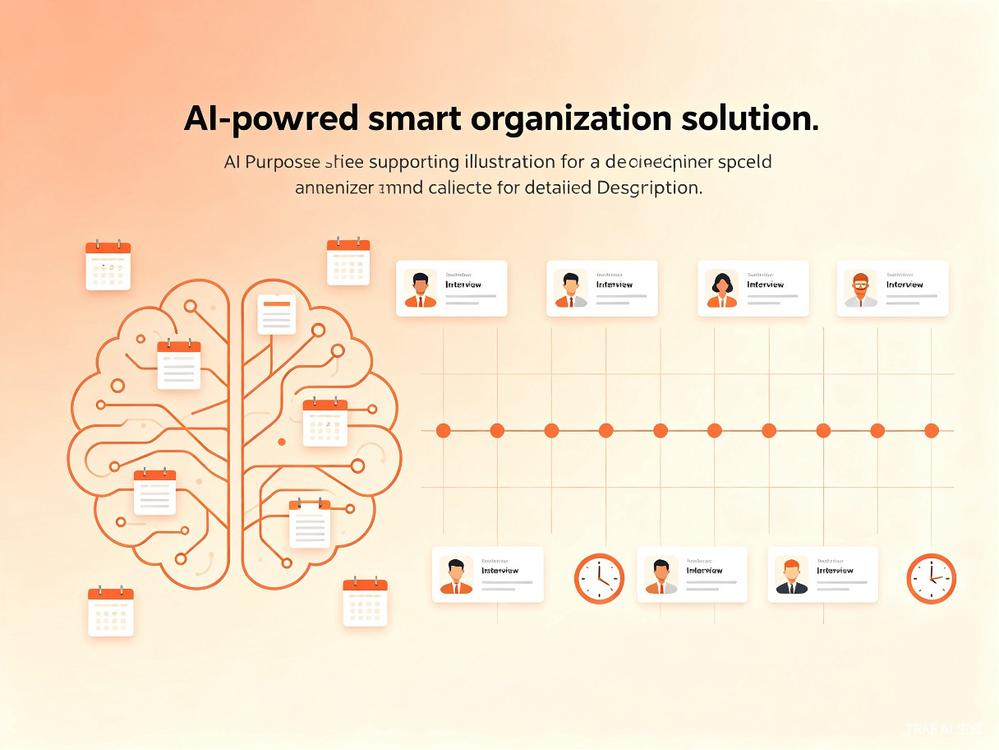
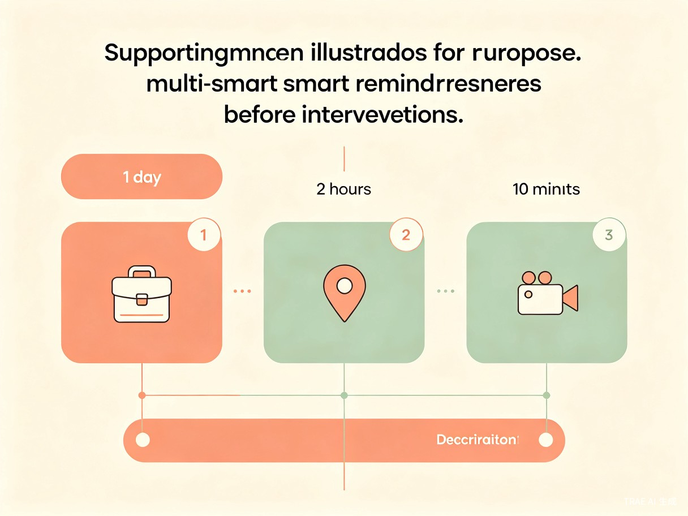

自动分析面试安排并智能提醒 —— 让求职者的每一次面试都不被错过
Contents · 目录
求职者面试信息管理的混乱现状。
谁需要这个工具，他们在什么场景下使用。
AI 如何自动识别、整理并提醒面试信息。
面试通知识别、日程生成、冲突提醒、准备清单。
效率提升、体验优化与社会价值。
Section · 01
求职过程中，面试信息管理为何如此困难？
Pain Point · 痛点
面试通知散落在微信、邮件、短信、招聘软件和日历里。求职者需要手动整理时间、公司、岗位、会议链接和准备事项——既麻烦又容易出错。
Problems · 常见问题
投递岗位过多，面试时间重叠或遗漏，导致错过宝贵机会。
没有提前提醒，来不及准备作品集或确认会议链接。
线上面试的链接分散在各处，临时找不到入口。
多场面试安排冲突，缺乏整体视图进行协调。
Section · 02
谁最需要这个工具？他们在什么场景下使用？
Users · 目标用户
正在找工作的大学生、应届生、实习生、转行求职者，以及需要频繁参加面试的职场人。他们在收到面试通知后，需要快速整理信息并合理安排时间。
Section · 03
AI 如何帮助求职者轻松管理面试日程？

Solution · 解决方案
用户只需上传或复制面试通知内容，AI 就能自动识别面试时间、公司、岗位、地点、会议链接和注意事项，并生成清晰的面试日程提醒。
Features · 核心功能

Reminder · 智能提醒
不只是提醒时间，还能根据面试类型智能建议准备节奏。提前一天提醒准备作品集，提前两小时提醒确认路线或会议链接，提前十分钟提醒进入会议。
How-to · 使用流程
截图或复制面试通知
自动识别关键信息
获得完整面试安排
分阶段贴心提醒
Section · 04
这个产品能带来什么改变？
Value · 价值与意义
帮助用户快速整理复杂的面试信息，减少手动记录成本，让求职更有条理。
不只是提醒时间，更能根据面试类型智能建议准备节奏，让用户体验更从容。
降低求职者因信息混乱错失机会的概率，让求职过程更有秩序，更从容面对面试。
Product · 产品形态
原生应用体验，功能最完整，支持离线查看日程
无需下载，即用即走，适合快速导入微信中的面试通知
跨平台访问，适合在电脑上批量管理和整理面试信息
让每一次面试，都不被错过